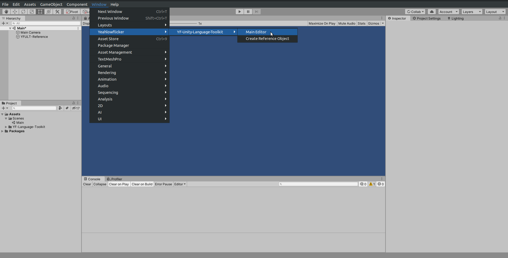
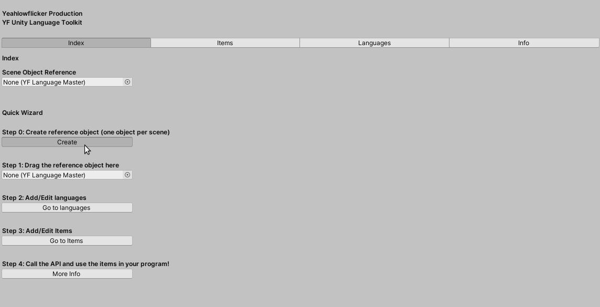
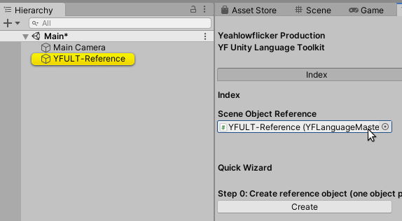
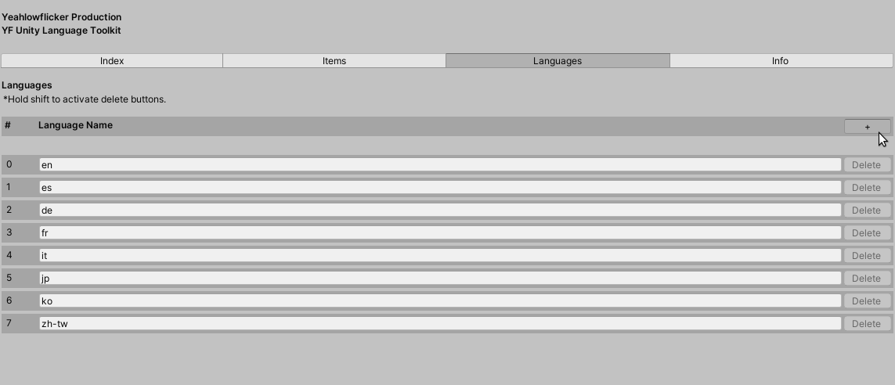
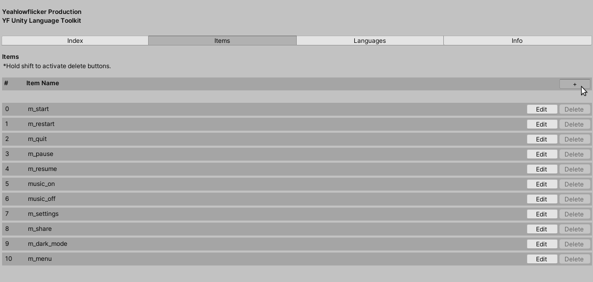

Index
Introduction Documentation API Reference License LinksIntroduction
Unity Language Toolkit is a utility tool built for Unity Engine. It lets users set variables in multiple languages and retrieve the values via C# scripting.
Features:
- Custom editor window
- Full API suppport
- Quick setup wizard
- Straightfoward methods
- Full source code provided
Documentation
Step 0: Download and import the asset via Unity Asset Store.
Step 1: Bring up the editor window via Window > Yeahlowflicker > YF-Unity-Language-Toolkit > Main Editor.
Step 2: Create a scene reference object via the editor window or Window > Yeahlowflicker > YF-Unity-Language-Toolkit > Create Reference Object.
Step 3: Drag the reference object to the object field in the editor.
Step 4: Add languages in the Languages tab of the editor. To add a language, click the + button.
Step 5: Add items in the Items tab of the editor. To add an item, click the + button.
Step 6: Edit the values of each item by clicking the Edit button in the Items tab of the editor.

Step 7: In your scripts, call the reference object and get your desired values using the API.
Step 8: You are now good to go!
Note 0: Users are always recommended to use the editor window to edit the values, and create reference objects via only the editor window or the Unity toolbar options. In simple words, we do not recommend dragging the scripts directly to custom-made GameObjects.
Note 1: Always keep ONE reference object in a scene ONLY. Otherwise the toolkit will have trouble finding the correct one.
Note 2: To use the methods, you must include using Yeahlowflicker.Unity.LanguageToolkit; in your scripts.
Note 3: To delete an item, hold shift key to activate the delete buttons.
Note 4: Please note that we have hidden the script on the reference object in order to prevent unnecessary errors.
API Reference
Singleton instance of language master. As long as reference object is present, communication with language master can be done by calling this instance property.
YFLanguageMaster.instance.GetItem("hello_world", "en-us");
Add a new item to language master.
YFLanguageMaster.instance.AddItem("foo");
Add a new language to language master.
YFLanguageMaster.instance.AddLanguage("en-uk");
Return a value based on name and language.
YFLanguageMaster.instance.GetItem("hello_world", "en-us");
Remove a language from language master.
YFLanguageMaster.instance.RemoveLanguage("en-uk");
Rename a language from language master, using item index as identifier.
YFLanguageMaster.instance.GetItem(0, "en");
Set the value of an item based on name and language.
YFLanguageMaster.instance.SetItem("hello_world", "en-us", "Hello World!");
License
This project is licensed under the Unity Default License.
By downloading the asset, you understand and agree with the license.
The extension is published via the Unity Asset Store only. You should not install/download the extension from external sources. We are not responsible for any issues occured due to the use of the extension installed from unauthorized sources.